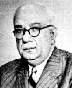

Recep Peker (1888-1950)

Cumhuriyet dönemi siyaset ve devlet adamlarýmýzdandýr. Askeri kökenli olup, 1911 yýlýndan itibaren çýkan savaþlarda bulunmuþtur. Türkiye Büyük Millet Meclisinin açýlýþýndan itibaren çeþitli görevlerde bulunmuþ, Meclis sekreterliði, milletvekilliði, bakanlýk ve baþbakanlýk yapmýþtýr. Fikir ve tavýrlarýndaki sertliðinden ötürü "Jandarma Recep" lakabýyla anýlmýþtýr. Çok partili hayata geçilirken ilk hükümeti kurmuþ, Menderes'in eleþtirilerine karþý yaptýðý hakaret sebebiyle, siyasi bir bunalýma sebep olmuþtur. Bediüzzaman, Emirdað'da bulunduðu sýrada; milletvekilliði yapmýþ ve Recep Peker'e yakýn olan M. Salih Yeþiloðlu'na yazdýðý bir mektubunda, onlardan iyilik istemediðini, daha öncekilerin yaptýðý zulüm ve tazyikin devam ettirilmesine meydan verilmemesini talep ettiðini belirtmiþtir.Recep Peker, 5 Þubat 1888 tarihinde Ýstanbul'da doðdu. Kocamustafa Paþa Askeri Rüþtiyesini bitirdikten sonra Harb Okuluna girdi ve buradan 1907 yýlýnda mezun oldu. Mezuniyetinden sonra 1911-13 yýllarý arasýnda meydana gelen Yemen, Trablusgarp ve Balkan Savaþlarýna katýldý. Birinci Dünya Savaþý sýrasýnda ise Rumeli ve Kafkas cephelerinde bulundu.
Recep Peker, askeri eðitimini sürdürerek 1919 yýlýnda binbaþý rütbesi ile Harp Akademisinden mezun oldu. Kurmay yarbay rütbesi ile Anadolu'ya geçti. Bir süre 20. Kolordu'da görev yaptý. Büyük Millet Meclisi'nin açýlmasýndan sonra meclis sekreterliði görevinde bulundu. Bu görevi 1920 yýlýndan baþlayarak üç yýl boyunca sürdürdü. 1923 yýlýndan itibaren de milletvekili olarak Mecliste bulundu.
Kütahya ve daha sonra Ýstanbul mebusu olarak Mecliste bulunan Peker, 1923 yýlýnda Cumhuriyet Halk Partisi Genel Sekreterliðine getirildi. Bu arada Ankara'da yayýnlanan Hakimiyeti Milliye Gazetesi'nin, bir süre baþ yazarlýðýný da yaptý.
Uzun yýllar Mecliste bulunacak olan Peker, 1924 yýlýnda Ýçiþleri Bakanlýðýna atandý. Daha sonra Mübadele ve Ýmar Bakanlýðý (19241925), Maliye (1924), Savunma (19251927), Bayýndýrlýk (19281930) Bakanlýðý yaptý. Daha önce yaptýðý parti genel sekreterliðine 1927 yýlýnda bir kez daha seçildi. Partideki görevini 1928 yýlýnda meclis gurubu baþkan vekili olarak sürdürdü.
Recep Peker, çok partili döneme geçildikten sonra kurulan ilk hükümetin baþýnda bulundu ve Aðustos 1946 tarihinde baþbakan oldu. Baþbakanlýðý yaklaþýk bir yýl sürdü. Ýsmet Ýnönü ile aralarýndaki anlaþmazlýktan dolayý baþbakanlýktan ayrýlmak zorunda kaldý. Bu anlaþmazlýk aralarýnýn daha fazla açýlmasý ve Ýnönü'ye karþý muhalefete geçmesiyle sonuçlandý. Ancak, bir süre sonra siyasi hayattan da çekildi. 1 Nisan 1950 yýlýnda Ýstanbul'da öldü.
Devletçilik konusunda son derece katý tutumlu olan Peker, özellikle Þükrü Saraçoðlu Hükümetinde Ýçiþleri Bakanlýðý yaptýðý sýrada parti ve devletin ayrýlmazlýðýný savundu. Halk Evlerinin yayýn organý olarak çýkan Ülkü Dergisi'nde Ýnkýlap Tarihi ile ilgili yazdýðý notlarý bilahare ders kitabý olarak yayýnlandý (1935). Bu eserinde Ýnkýlaplar ve kendi kiþisel yaklaþýmý açýsýndan dikkat çekici ifadelere yer vermektedir.
Ýnkýlaplarý yapmak için zor kullanmak gerektiðini, deðiþiklik yaparken mukavemet gösterecek kimseleri vurup devirmedikçe inkýlap yapmanýn imkansýz olduðunu savundu. Daha önceki alýþkanlýklarý terk ettirip bunlarýn yerine yenisini koymak ve Türk inkýlabýný gerçekleþtirmek için daha ziyade zor kullanmak gerektiðini ileri sürdü. Bu görüþlerini kitabýnda kayda geçirdi.
Recep Peker, ayný zamanda muhalefete olan tahammülsüzlüðü ile de dikkat çekti. Türkiye Büyük Millet Meclisi'nde 1947 yýlý bütçe görüþmeleri sýrasýnda Demokrat Parti adýna Adnan Menderes söz aldý. Bütçe hakkýndaki eleþtirilerini dile getirdi. Eleþtirilere kýzan Peker, kürsüye çýkarak sert mukabelede bulundu. Menderes'in sözleri için "kötümser, psikopat, mariz (hastalýklý) bir ruhun ifadesi" demek suretiyle hakarette bulundu. Bunun üzerine DP milletvekilleri Meclis oturumunu terk ederek bir süre çalýþmalara katýlmadýlar. Çok partili hayata geçildikten sonra meydana gelen bu siyasi bunalým büyük bir rahatsýzlýðý sebep oldu. (http://www.aksam.com.tr/arsiv/aksam/2003/01/29/politika/politika4.html)
Ýkinci Dünya Savaþý çýktýktan sonra, ülkemizin dahil olup olmamasý konusunda önemli tartýþmalar yaþandý. Taraf olan veya karþý olanlar tavýrlarýnýn sebeplerini deðiþik zeminlerde dile getirdiler. CHP gurubunda da savaþa girip girilmemesi konusu tartýþýldý. Peker savaþa girme taraftarý idi. Ýngiltere ve Fransa ile birlikte savaþa girmek gerektiðini savundu. Buna karþýlýk dönemin baþbakaný olan Refik Saydam, Türkiye'de iþlerin "A'dan Z'ye kadar bozuk olduðu" tespitini yaptýktan sonra geleceðimiz için savaþ dýþýnda kalmak gerektiðini savundu. (http://www.diplomatikgozlem.com/yorum_oku.asp?id=40)
Peker, CHP'nin bir ideologu olarak görüþlerini dile getirirken özellikle 1930'lu yýllardan itibaren hakim zihniyet için önemli ip uçlarý vermektedir. Fikirlerindeki katýlýðýndan ötürü "Jandarma Recep" lakabýyla anýlmýþtýr. Ülke insanýnýn sahip olduðu bütün deðerleri CHP'nin altý oku içine sýkýþtýrmaya çalýþtý. Her þeyi bu çerçeve içinde deðerlendirdi. Ona göre parti deðerleri bütün hak ve özgürlüklerin de üstünde idi. Ýnsana meþruiyet tanýmadýðý gibi devleti de karanlýk bir çerçeve içine ele aldý. Devletin tarifini yaparken bireyi dýþlayan ve hiçbir hak tanýmayan bir anlayýþ sergiledi. (Yýlmaz Karkoyunlu, TBMM, 11.12.2000)
Bediüzzaman, Denizli hapishanesinden tahliye olduktan sonra 1944 yýlýnda Emirdað'a geçti. Burada bulunduðu sýrada M. Salih Yeþiloðlu ile mektuplaþmalarýndan birinde Recep Peker'in ismi zikredilmektedir. Milletvekilliði yapmýþ olan M. Salih'in Kazým Karabekir ile Recep Peker'e dost olduðu anlaþýlmaktadýr. Bediüzzaman, bu dostluklarýna istinaden, Recep Peker vasýtasýyla, kendisine yapýlan haksýz zulüm ve tazyiklere son verilmesi talebinde bulunmuþtur. Baskýlardan dolayý Emirdað'da çok büyük sýkýntý çekmekte olduðunu ve Denizli'deki hapis hayatýndan beter bir durumla karþý karþýya bulunduðunu dile getirerek, siyasilerden iyilik deðil ama, en azýndan daha öncekilerin yaptýðý zulmün devam ettirilmemesini ve haksýzlýklara son verilmesini talep etmiþtir (Emirdað Lahikasý, 1997, s. 170.)